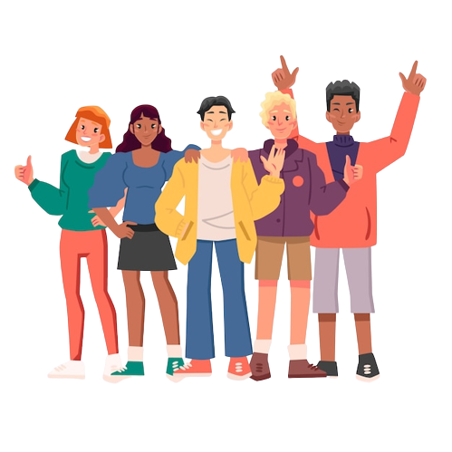
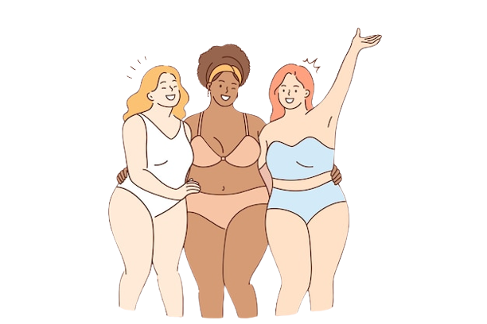
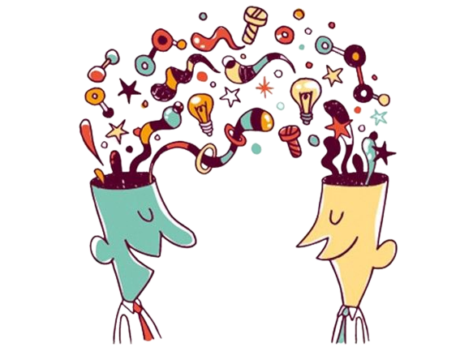
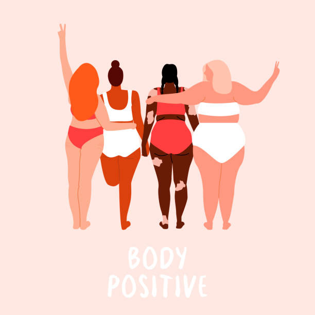
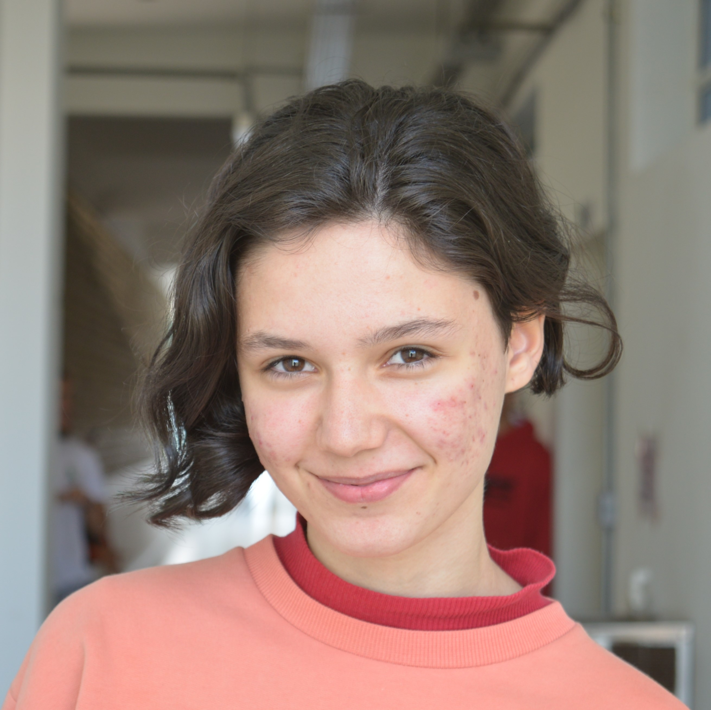
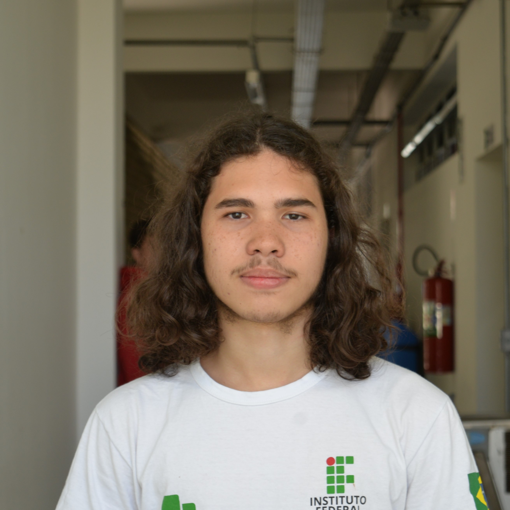
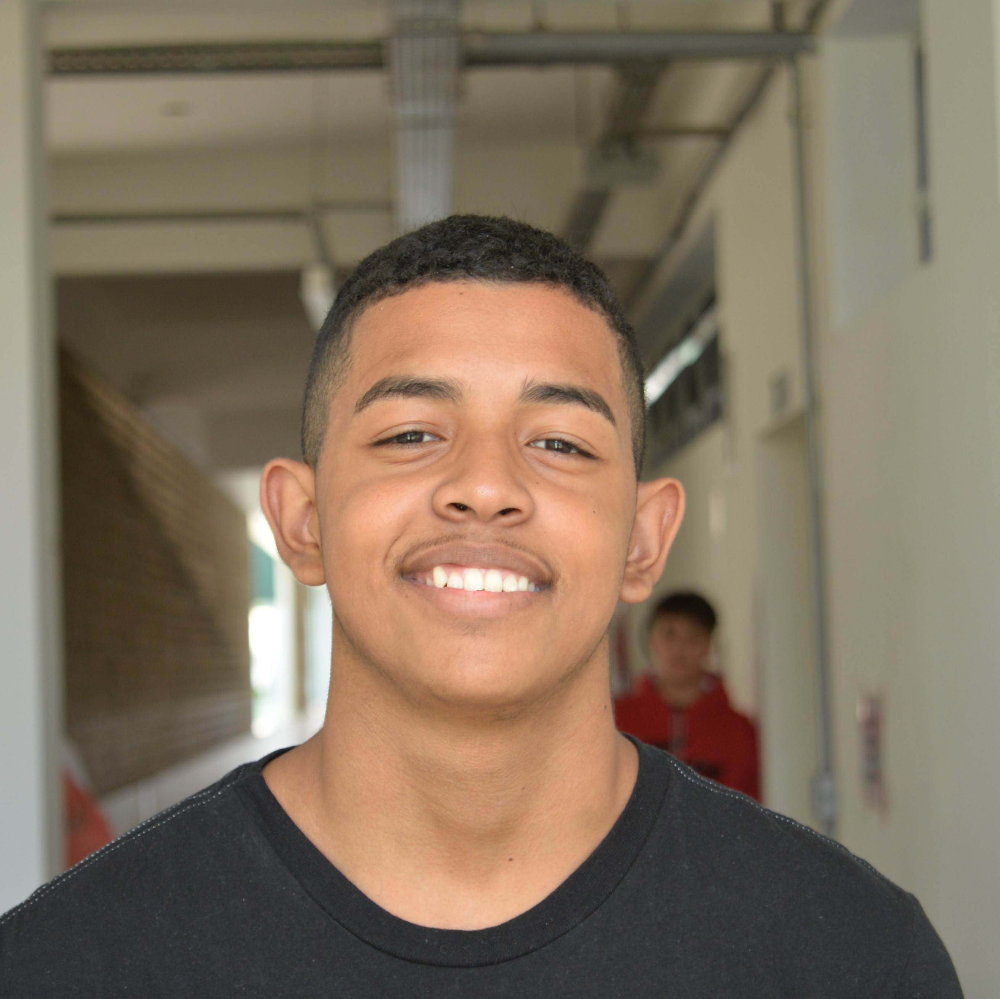
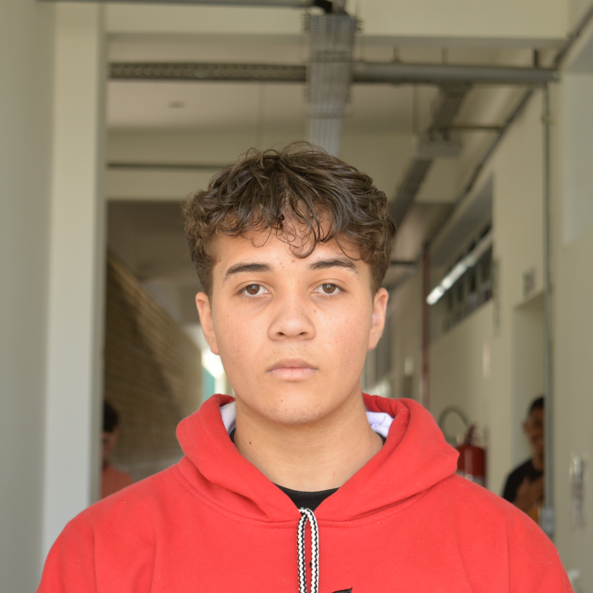
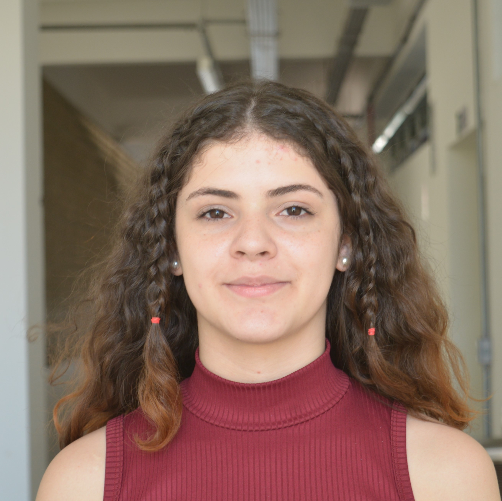
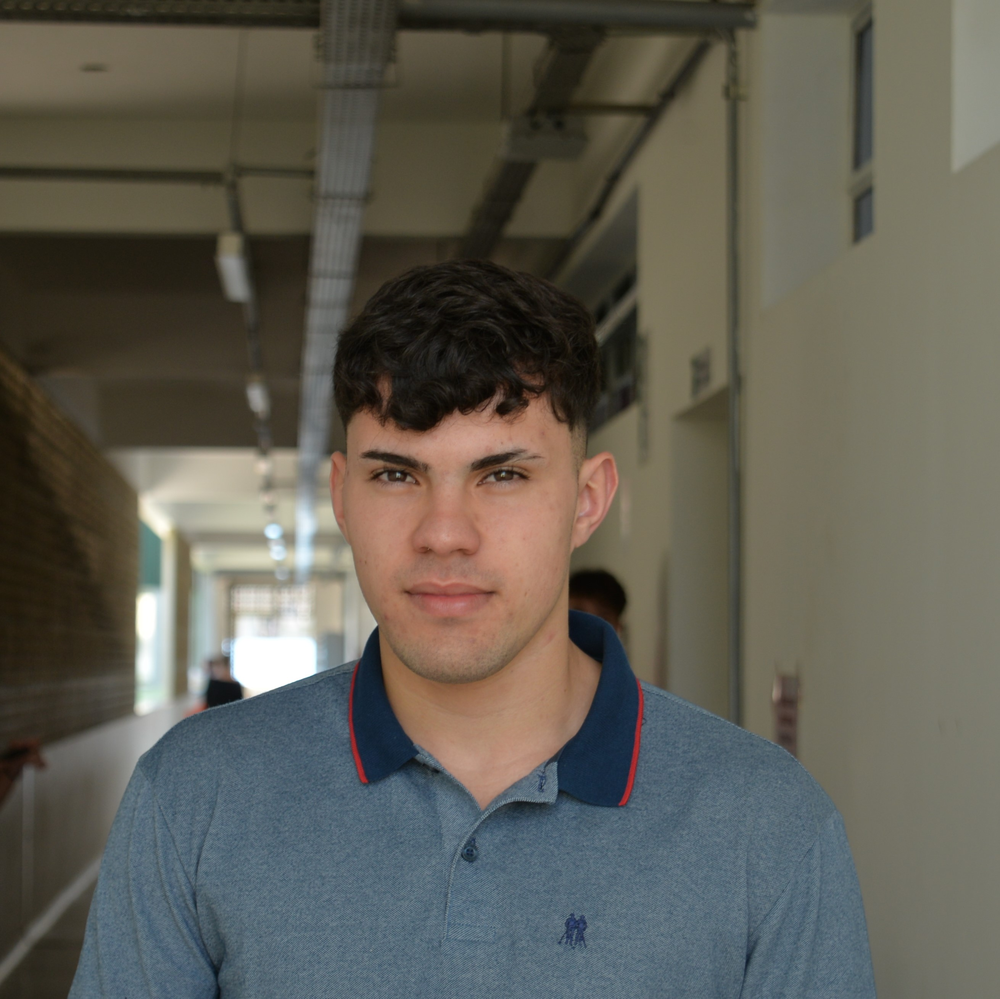

The Brazilian population is formed by the result of a miscegenation of different peoples. The main focus of these peoples is present among the Portuguese, Africans and indigenous peoples. However, from sec. XIX, several European and Asian immigrants came to Brazil, however they also constitute our "Brazilian people"
Comparing ourselves with other people has become something common in our routine, and it has become more frequent with the excessive use of the internet, a fact that leads us to unhappiness, raising levels of stress and anxiety and can even cause depression.
Alterity consists in the fact that we have several differences present in a person and understand them. We can exercise alterity by thinking about the situation that the other finds himself in the face of anxieties, anguish, fears and instead of criticizing, we can put ourselves in that person's place and try to feel how he feels.
In Darcy Ribeiro's work ''The Brazilian people'' one of the main ideas is the beginning of the miscegenation of Brazilian roots marked by the creation of standards and exclusion of people who do not fit them. At that time, physical characteristics defined place in society, a problem that psychologist and psychoanalyst Sheyna Vasconcellos points out. Another problem present in the whole world that is discussed by Plato since ancient Greece is the lack of alterity that kills differences. According to a survey conducted by the magazine ABM, one in three young people reported that their biggest concern online was comparing their lives with others through social media, claiming they worry about the way it affects their well-being. Which becomes a problem these days, due to the wear and tear of health and the fact cited by psychologist Sheyna Vasconcellos, who says that the current generation tends to use the body as a display scenario in search of approvals and likes, committing crazy things in search of the long-awaited ''standard''. Among the numerous reasons that led to these non-acceptance problems is the lack of alterity, which is related to the ability to perceive oneself or one's own social group, not as a standard, but also as an individual.
Mitcy saraiva is a 16 year old student, programmer and leader of the Papo reto sites group. She is attending the first year of technical high school at IFSP-BRASIL. She won math and geography Olympiads and won state athletics championships.
Rafael ribeiro is a 16 year old student in the first year of informatics at IFSP-BRASIL. He is responsible for the programming and design of the To Be Free project.
Isaque Maia is a 16 year old student in the first year of informatics at IFSP-BRASIL. He is responsible for the design, planning the visual identity of the project, and administrator of our social networks.
Gustavo Sales is a first year of informatics student at IFSP-BRASIL. He is responsible for the graphic design of the website and administrator of our social networks.
Gabrielly Araújo is a informatics student at IFSP-BRASIL. She is the researcher and responsible for the writing of the social inclusion project. Her goal is to include people in society.
Vitor Hugo is a first-year informatics student at IFSP-BRASIL. He is the redactor of the project texts and researcher.
To Be Free is a movement with the objective of meeting people and understanding why there is so much rejection with their own bodies and differences. This problem was our main focus during the research, reflection, and design of the site. Our message to you was inspired by a speech by a character from the movie "Extraordinary" when the protagonist teaches that we, as humans, carry not only the ability to be kind, but the own ability to choose kindness.
phone_android
callAll rights reserved for © 2022 Papo Reto sites Av. Bahia, 1739 - Indaiá, Caraguatatuba - SP, 11665-071